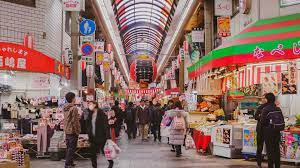

Osaka (大阪, Ōsaka) is Japan's second largest metropolitan area after Tokyo.
It has been the economic powerhouse of the Kansai Region for many centuries. Osaka was formerly known as Naniwa,
Before the Nara Period, when the capital used to be moved with the reign of each new emperor, Naniwa was once Japan's capital city, the first one ever known.
In the 16th century, Toyotomi Hideyoshi chose Osaka as the location for his castle, and the city may have become Japan's political capital
if Tokugawa Ieyasu had not terminated the Toyotomi lineage after Hideyoshi's death and established his government in distant Edo (Tokyo).
1. The construction of Osaka Castle (大阪城, Ōsakajō) started in 1583 on the former site of the Ishiyama Honganji Temple, which had been destroyed by Oda Nobunaga thirteen years earlier.
Toyotomi Hideyoshi intended the castle to become the center of a new, unified Japan under Toyotomi rule. It was the largest castle at the time.
However, a few years after Hideyoshi's death, Tokugawa troops attacked and destroyed the castle and terminated the Toyotomi lineage in 1615.
Osaka Castle was rebuilt by Tokugawa Hidetada in the 1620s, but its main castle tower was struck by lightening in 1665 and burnt down.
It was not until 1931 that the present ferro-concrete reconstruction of the castle tower was built. During the war it miraculously survived the city-wide air raids.
Major repair works gave the castle new glamor in 1997. The castle tower is now entirely modern on the inside and even features an elevator for easier accessibility. It houses an informative museum about the castle's history and Toyotomi Hideyoshi.
2. Tenma (天満) is a neighborhood to the east of Osaka's Kita district.
The area is best known for being the home of Osaka Tenmangu Shrine, from which the neighborhood got its name, and the Tenjinbashi-suji shopping street. The area is also renowned for its bustling nightlife quarter.
Tenjinbashi-suji Shopping Street claims to be the longest in Japan.
The covered arcade stretches more than two kilometers, starting approximately from Tenjimbashi-suji Rokuchome Subway Station and leading south until close to the Tenjinbashi Bridge.
The shopping street has a neighborhood atmosphere and is where locals shop for goods such as groceries, clothes, shoes, books, medicine, snacks and sundries. Prices for fashion products are relatively low in return for average quality. There are also many eateries and cafes.
3. The Mozu Tombs (百舌鳥古墳群, Mozu Kofungun) are a cluster of several dozen ancient tombs in the Mozu area of Sakai City, immediately south of Osaka City. The cluster, along with some other tombs in the region, makes up the
"Mozu-Furuichi Kofungun Ancient Tumulus Structures", which were designated a Cultural World Heritage Site in 2019.
The tombs were built in the 4th to 6th centuries for the ruling elite, with the larger, more elaborately shaped mounds signifying higher status than smaller amd simpler ones. The largest of the
tombs is the Emperor Nintoku Kofun which is believed to be the tomb of Emperor Nintoku. With the surrounding moats included, the tomb is about 800 meters long and 600 meters wide, making
it not only Japan's largest grave, but also one of the world's largest. Less than a kilometer away lies the Emperor Richu Kofun, the third largest tomb in Japan.
4. Located around Namba Station, Minami (ミナミ, "South") is one of Osaka's two major city centers.
It is the city's most famous entertainment district and offers abundant dining and shopping choices.
The district is easily accessible as it is served by three train companies as well as
three subway lines and a highway bus terminal. The other major city center is Kita (キタ, "North") which is located around Osaka and Umeda stations.
5. Universal Studios Japan (USJ) was the first theme park under the Universal Studios brand to be built in Asia.
Opened in 2001 in the Osaka Bay Area, the theme park has been expanded over the years and is the most visited amusement park in Japan after Tokyo Disney Resort.
Universal Studios Japan currently has ten sections: Hollywood, New York, San Francisco, Jurassic Park, Waterworld, Amity Village, Universal Wonderland, Minion Park, The Wizarding World of Harry Potter and Super Nintendo World.
Visitors are able to enjoy many amusement rides, ranging from child-friendly carousels to thrilling roller coasters and simulators based on popular movies such as Spiderman, Back to the Future, Terminator 2 and Jurassic Park.
6. Minoo Park is one of Japan's oldest parks, and a great side trip from central Osaka. Often compared to Mount Takao or Mount Mitake in the Chichibu-Tama-Kai National Park near Tokyo,
Minoo Park is a relaxing place to get away from all the concrete and skyscrapers of the downtown.
Osaka itself is not well known for it's nature, so some tourists miss out on this hotspot and head to Kyoto or the Japan Alps.
Minoo Park is therefore usually very quiet, but a surprisingly pretty place to visit.
Minoo Park is worth visiting any time of the year. The well maintained paths make it possible to walk up in the winter, and in the summer beautiful green trees surround walkers. The best time to come is in the autumn (late November), when visitors can see a huge display of red and golden maple leaves.

7. Kuromon Market (黒門市場, Kuromon Ichiba)
is a covered public market that stretches around 600 meters
parallel to Sakaisujidori Street in the Minami area of Osaka.
The market has about 150 shops that predominantly sell fish, meat and produce,
with other shops also purveying traditional sweets and low priced clothes
and homeware. The market dates back to the Edo Period, and today makes
for an atmospheric place to stroll around and try different street foods.
One of the numerous charms of the market is the way in which many of its shops not only sell
larger food quantities for later consumption, but also smaller portions that can be eaten then and there.
Some of the foods on offer are grilled seafood including crab legs and oysters, yakitori, sea urchin, sushi, eel, seasonal fruits,
and the street food staple takoyaki.